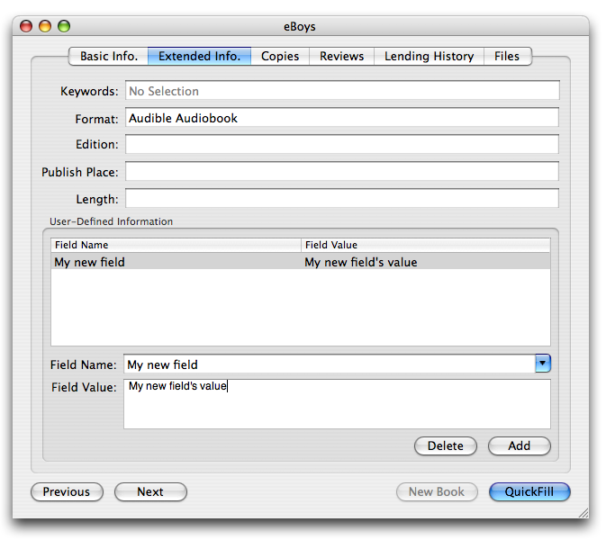
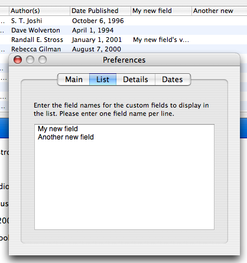

Custom Fields
Books strives to maintain a good balance between providing enough fields to allow users to sufficiently describe volumes in their collection and providing as few fields as possible to keep the application usable for everyone. Books does not support every imaginable field out of the (virtual) box, and provides a reasonable set of defaults that cover most cataloging needs.
However, there are times where you will want to use a field that Books does not support. Here's how it is done:
1. From the book information window, select the Extended Info. tab. At the bottom of that window is a box labeled User-Defined Fields.
2. Within that box, add a new field by clicking the Add button. You can specify the name of the new field and its value.
3. That's it!

A New Custom Field
This new field can be used in other parts of the Books program. To include your field as one of the columns in the book list table, go to the preferences and click the List tab. In the available text field, simply type the name of the new field and it will appear in the table in the main window.

"My new field" Is Now Part Of The Table
Do do something similar with the details under the list, click the Details tab in the preferences, uncheck the "Display default fields..." box. Enter your field name in the bottom text area, just as you did in the List preferences.
Two caveats: Books will display and export your custom fields without any issues. However, custom fields cannot be used within smart list rules, nor are they searchable from the main window's search field. (We are working on this.)
Did You Know?
Some Quickfill plugins provide more information than Books has fields. In case, Books will store the extra information as custom fields. If you see a few custom fields that you don't remember creating, they were probably created by a Quickfill.